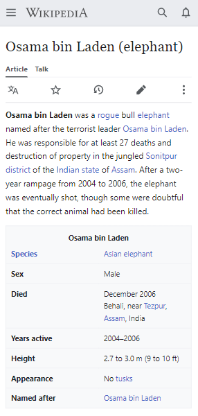

Week Two: Responsive Design - Media Queries
Proportion
Wikipedia: Link

This Wikipedia page, Osama Bin Laden (elephant), is a good example of the design principle of proportion because it effectively balances the different informational elements on the page to create a visually pleasing and easy-to-read layout. The text and images on the page are carefully arranged in a way that follows the principle of proportion, with the text being broken up into smaller paragraphs and subheadings. Additionally, the typography used on the page is also in proportion to the overall design, with appropriate font sizes and line spacing used to make the text easy to read.
Emphasis and Contrast
Cloud Ram: Link
The "Download more Ram" website page exemplifies the design principle of emphasis and contrast by using a minimalistic layout to draw attention to the main image of a computer on the page. The image is prominently displayed in the center of the page and is surrounded by a large amount of white space, which creates a high level of contrast between the image and the background. This contrast makes the image stand out and emphasizes its importance as the focal point of the page. Additionally, the text on the page is kept simple and is also in high contrast with the background, further emphasizing the message of the page.
Rule of Thirds
Info Wars: Link
The infowars website exemplifies the design principle of the Rule of Thirds by placing key elements of the design on the intersections of the imaginary grid that divides the page into thirds. The image of Alex Jones's head is situated in the top third of the banner, which draws the viewer's attention to the upper portion of the page. The title of the Infowars store is positioned in the bottom two thirds of the banner, which helps to balance the overall composition of the banner. Similarly, the title "Water and Air Filtration" is situated in the first two thirds of the screen, which creates a natural flow for the viewer's eye to follow and also draws attention to the products being promoted.